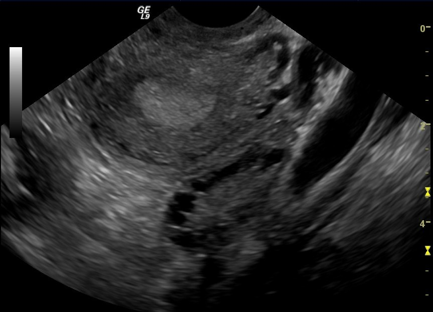
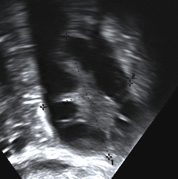

Polycystic ovary syndrome, or polycystic ovarian syndrome (PCOS), is the most common endocrine disorder in women of reproductive age.[14] The syndrome is named after cysts which form on the ovaries of some people with this condition, though this is not a universal symptom, and not the underlying cause of the disorder.[15][16]
Women with PCOS may experience irregular menstrual periods, heavy periods, excess hair, acne, pelvic pain, difficulty getting pregnant, and patches of thick, darker, velvety skin.[3] The primary characteristics of this syndrome include: hyperandrogenism, anovulation, insulin resistance, and neuroendocrine disruption.[17]
A review of international evidence found that the prevalence of PCOS could be as high as 26% among some populations, though ranges between 4% and 18% are reported for general populations.[18][19][20]
The exact cause of PCOS remains uncertain, and treatment involves management of symptoms using medication.[19]
Definition
Two definitions are commonly used:
- NIH
In 1990 a consensus workshop sponsored by the NIH/NICHD suggested that a person has PCOS if they have all of the following:[21]
- oligoovulation
- signs of androgen excess (clinical or biochemical)
- exclusion of other disorders that can result in menstrual irregularity and hyperandrogenism
- Rotterdam
In 2003 a consensus workshop sponsored by ESHRE/ASRM in Rotterdam indicated PCOS to be present if any two out of three criteria are met, in the absence of other entities that might cause these findings:[22][23][24]
- oligoovulation and/or anovulation
- excess androgen activity
- polycystic ovaries (by gynecologic ultrasound)
The Rotterdam definition is wider, including many more women, the most notable ones being women without androgen excess. Critics say that findings obtained from the study of women with androgen excess cannot necessarily be extrapolated to women without androgen excess.[25][26]
- Androgen Excess PCOS Society
In 2006, the Androgen Excess PCOS Society suggested a tightening of the diagnostic criteria to all of the following:[22]
- excess androgen activity
- oligoovulation/anovulation and/or polycystic ovaries
- exclusion of other entities that would cause excess androgen activity
Signs and symptoms
Signs and symptoms of PCOS include irregular or no menstrual periods, heavy periods, excess body and facial hair, acne, pelvic pain, difficulty getting pregnant, and patches of thick, darker, velvety skin,[3] ovarian cysts, enlarged ovaries, excess androgen, weight gain and hirsutism.[27][28]
Associated conditions include type 2 diabetes, obesity, obstructive sleep apnea, heart disease, mood disorders, and endometrial cancer.[4]
Further information: Infertility in polycystic ovary syndrome
Common signs and symptoms of PCOS include the following:
- Menstrual disorders: PCOS mostly produces oligomenorrhea (fewer than nine menstrual periods in a year) or amenorrhea (no menstrual periods for three or more consecutive months), but other types of menstrual disorders may also occur.[22]
- Infertility: This generally results directly from chronic anovulation (lack of ovulation).[22]
- High levels of masculinizing hormones: Known as hyperandrogenism, the most common signs are acne and hirsutism (male pattern of hair growth, such as on the chin or chest), but it may produce hypermenorrhea (heavy and prolonged menstrual periods), androgenic alopecia (increased hair thinning or diffuse hair loss), or other symptoms.[22][29] Approximately three-quarters of women with PCOS (by the diagnostic criteria of NIH/NICHD 1990) have evidence of hyperandrogenemia.[30]
- Metabolic syndrome: This appears as a tendency towards central obesity and other symptoms associated with insulin resistance, including low energy levels and food cravings.[22] Serum insulin, insulin resistance, and homocysteine levels are higher in women with PCOS.[31]
- Polycystic ovaries: Ovaries might get enlarged and comprise follicles surrounding the eggs. As result, ovaries might fail to function regularly. This disease is related to the number of follicles per ovary each month growing from the average range of 6-8 to double, triple or more[citation needed].
Women with PCOS tend to have central obesity, but studies are conflicting as to whether visceral and subcutaneous abdominal fat is increased, unchanged, or decreased in women with PCOS relative to non-PCOS women with the same body mass index.[32] In any case, androgens, such as testosterone, androstanolone (dihydrotestosterone), and nandrolone decanoate have been found to increase visceral fat deposition in both female animals and women.[33]
Although 80% of PCOS presents in women with obesity, 20% of women diagnosed with the disease are non-obese or "lean" women.[34] However, obese women that have PCOS have a higher risk of adverse outcomes, such as hypertension, insulin resistance, metabolic syndrome, and endometrial hyperplasia.[35]
Even though most women with PCOS are overweight or obese, it is important to acknowledge that non-overweight women can also be diagnosed with PCOS. Up to 30% of women diagnosed with PCOS maintain a normal weight before and after diagnosis. "Lean" women still face the various symptoms of PCOS with the added challenges of having their symptoms properly addressed and recognized. Lean women often go undiagnosed for years, and usually are diagnosed after struggles to conceive.[36] Lean women are likely to have a missed diagnosis of diabetes and cardiovascular disease. These women also have an increased risk of developing insulin resistance, despite not being overweight. Lean women are often taken less seriously with their diagnosis of PCOS, and also face challenges finding appropriate treatment options. This is because most treatment options are limited to approaches of losing weight and healthy dieting.[37]
Hormone levels
Testosterone levels are usually elevated in women with PCOS.[38][39] In a 2020 systematic review and meta-analysis of sexual dysfunction related to PCOS which included 5,366 women with PCOS from 21 studies, testosterone levels were analyzed and were found to be 2.34 nmol/L (67 ng/dL) in women with PCOS and 1.57 nmol/L (45 ng/dL) in women without PCOS.[39] In a 1995 study of 1,741 women with PCOS, mean testosterone levels were 2.6 (1.1–4.8) nmol/L (75 (32–140) ng/dL).[40] In a 1998 study which reviewed many studies and subjected them to meta-analysis, testosterone levels in women with PCOS were 62 to 71 ng/dL (2.2–2.5 nmol/L) and testosterone levels in women without PCOS were about 32 ng/dL (1.1 nmol/L).[41] In a 2010 study of 596 women with PCOS which used liquid chromatography–mass spectrometry (LC–MS) to quantify testosterone, median levels of testosterone were 41 and 47 ng/dL (with 25th–75th percentiles of 34–65 ng/dL and 27–58 ng/dL and ranges of 12–184 ng/dL and 1–205 ng/dL) via two different labs.[42] If testosterone levels are above 100 to 200 ng/dL, per different sources, other possible causes of hyperandrogenism, such as congenital adrenal hyperplasia or an androgen-secreting tumor, may be present and should be excluded.[40][43][38]
Associated conditions
Warning signs may include a change in appearance. But there are also manifestations of mental health problems, such as anxiety, depression, and eating disorders.[27][medical citation needed]
A diagnosis of PCOS suggests an increased risk of the following:
- Endometrial hyperplasia and endometrial cancer (cancer of the uterine lining) are possible, due to overaccumulation of uterine lining, and also lack of progesterone, resulting in prolonged stimulation of uterine cells by estrogen.[21][44] It is not clear whether this risk is directly due to the syndrome or from the associated obesity, hyperinsulinemia, and hyperandrogenism.[45][46][47]
- Insulin resistance/type 2 diabetes. A review published in 2010 concluded that women with PCOS have an elevated prevalence of insulin resistance and type 2 diabetes, even when controlling for body mass index (BMI).[21][48] PCOS is also associated with higher risk for diabetes.[49]
- High blood pressure, in particular if obese or during pregnancy[50]
- Depression and anxiety[22][51]
- Dyslipidemia – disorders of lipid metabolism – cholesterol and triglycerides. Women with PCOS show a decreased removal of atherosclerosis-inducing remnants, seemingly independent of insulin resistance/type 2 diabetes.[52]
- Cardiovascular disease,[21] with a meta-analysis estimating a 2-fold risk of arterial disease for women with PCOS relative to women without PCOS, independent of BMI.[53]
- Strokes[21]
- Weight gain
- Miscarriage[54][55]
- Sleep apnea, particularly if obesity is present
- Non-alcoholic fatty liver disease, particularly if obesity is present
- Acanthosis nigricans (patches of darkened skin under the arms, in the groin area, on the back of the neck)[21]
- Autoimmune thyroiditis[citation needed]
The risk of ovarian cancer and breast cancer is not significantly increased overall.[44]
Cause
PCOS is a heterogeneous disorder of uncertain cause.[56][57] There is some evidence that it is a genetic disease. Such evidence includes the familial clustering of cases, greater concordance in monozygotic compared with dizygotic twins and heritability of endocrine and metabolic features of PCOS.[7][56][57] There is some evidence that exposure to higher than typical levels of androgens and the anti-Müllerian hormone (AMH) in utero increases the risk of developing PCOS in later life.[58]
It may be caused by a combination of genetic and environmental factors.[6][7][59] Risk factors include obesity, a lack of physical exercise, and a family history of someone with the condition.[8] Diagnosis is based on two of the following three findings: anovulation, high androgen levels, and ovarian cysts.[4] Cysts may be detectable by ultrasound.[9] Other conditions that produce similar symptoms include adrenal hyperplasia, hypothyroidism, and high blood levels of prolactin.[9]
Genetics
The genetic component appears to be inherited in an autosomal dominant fashion with high genetic penetrance but variable expressivity in females; this means that each child has a 50% chance of inheriting the predisposing genetic variant(s) from a parent, and, if a daughter receives the variant(s), the daughter will have the disease to some extent.[57][60][61][62] The genetic variant(s) can be inherited from either the father or the mother, and can be passed along to both sons (who may be asymptomatic carriers or may have symptoms such as early baldness and/or excessive hair) and daughters, who will show signs of PCOS.[60][62] The phenotype appears to manifest itself at least partially via heightened androgen levels secreted by ovarian follicle theca cells from women with the allele.[61] The exact gene affected has not yet been identified.[7][57][63] In rare instances, single-gene mutations can give rise to the phenotype of the syndrome.[64] Current understanding of the pathogenesis of the syndrome suggests, however, that it is a complex multigenic disorder.[65]
Due to the scarcity of large-scale screening studies, the prevalence of endometrial abnormalities in PCOS remains unknown, though women with the condition may be at increased risk for endometrial hyperplasia and carcinoma as well as menstrual dysfunction and infertility.
The severity of PCOS symptoms appears to be largely determined by factors such as obesity.[7][22][66] PCOS has some aspects of a metabolic disorder, since its symptoms are partly reversible. Even though considered as a gynecological problem, PCOS consists of 28 clinical symptoms.[67]
Even though the name suggests that the ovaries are central to disease pathology, cysts are a symptom instead of the cause of the disease. Some symptoms of PCOS will persist even if both ovaries are removed; the disease can appear even if cysts are absent. Since its first description by Stein and Leventhal in 1935, the criteria of diagnosis, symptoms, and causative factors are subject to debate. Gynecologists often see it as a gynecological problem, with the ovaries being the primary organ affected. However, recent insights show a multisystem disorder, with the primary problem lies in hormonal regulation in the hypothalamus, with the involvement of many organs. The term PCOS is used due to the fact that there is a wide spectrum of symptoms possible. It is common to have polycystic ovaries without having PCOS; approximately 20% of European women have polycystic ovaries, but most of those women do not have PCOS.[15]
Environment
PCOS may be related to or worsened by exposures[clarification needed] during the prenatal period,[68][69][70] epigenetic factors, environmental impacts (especially industrial endocrine disruptors, such as bisphenol A and certain drugs)[71][72][73] and the increasing rates of obesity.[72]
Endocrine disruptors are defined as chemicals that can interfere with the endocrine system by mimicking hormones such as estrogen. According to the NIH (National Institute of Health), examples of endocrine disruptors can include dioxins and triclosan. Endocrine disruptors can cause adverse health impacts in animals. [74] Additional research is needed to assess the role that endocrine disruptors may play in disrupting reproductive health in women and possibly triggering or exacerbating PCOS and its related symptoms.[75]
Pathogenesis
Polycystic ovaries develop when the ovaries are stimulated to produce excessive amounts of androgenic hormones, in particular testosterone, by either one or a combination of the following (almost certainly combined with genetic susceptibility):[61]
- the release of excessive luteinizing hormone (LH) by the anterior pituitary gland
- through high levels of insulin in the blood (hyperinsulinaemia) in women whose ovaries are sensitive to this stimulus
A majority of women with PCOS have insulin resistance and/or are obese, which is a strong risk factor for insulin resistance, although insulin resistance is a common finding among women with PCOS in normal-weight women as well.[10][22][31] Elevated insulin levels contribute to or cause the abnormalities seen in the hypothalamic–pituitary–ovarian axis that lead to PCOS. Hyperinsulinemia increases GnRH pulse frequency,[76] which in turn results in an increase in the LH/FSH ratio[76][77] increased ovarian androgen production; decreased follicular maturation; and decreased SHBG binding.[76] Furthermore, excessive insulin increases the activity of 17α-hydroxylase, which catalyzes the conversion of progesterone to androstenedione, which is in turn converted to testosterone. The combined effects of hyperinsulinemia contribute to an increased risk of PCOS.[76]
Adipose (fat) tissue possesses aromatase, an enzyme that converts androstenedione to estrone and testosterone to estradiol. The excess of adipose tissue in obese women creates the paradox of having both excess androgens (which are responsible for hirsutism and virilization) and excess estrogens (which inhibit FSH via negative feedback).[78]
The syndrome acquired its most widely used name due to the common sign on ultrasound examination of multiple (poly) ovarian cysts. These "cysts" are in fact immature ovarian follicles. The follicles have developed from primordial follicles, but this development has stopped ("arrested") at an early stage, due to the disturbed ovarian function. The follicles may be oriented along the ovarian periphery, appearing as a 'string of pearls' on ultrasound examination.[79]
PCOS may be associated with chronic inflammation,[80] with several investigators correlating inflammatory mediators with anovulation and other PCOS symptoms.[81][82] Similarly, there seems to be a relation between PCOS and an increased level of oxidative stress.[83]
Diagnosis
Not every person with PCOS has polycystic ovaries (PCO), nor does everyone with ovarian cysts have PCOS; although a pelvic ultrasound is a major diagnostic tool, it is not the only one.[84] The diagnosis is fairly straightforward using the Rotterdam criteria, even when the syndrome is associated with a wide range of symptoms.[85]
 Differential diagnosis
Other causes of irregular or absent menstruation and hirsutism, such as hypothyroidism, congenital adrenal hyperplasia (21-hydroxylase deficiency), Cushing's syndrome, hyperprolactinemia, androgen-secreting neoplasms, and other pituitary or adrenal disorders, should be investigated.[22][24][86]
Assessment and testing
Standard assessment
- History-taking, specifically for menstrual pattern, obesity, hirsutism and acne. A clinical prediction rule found that these four questions can diagnose PCOS with a sensitivity of 77.1% (95% confidence interval [CI] 62.7%–88.0%) and a specificity of 93.8% (95% CI 82.8%–98.7%).[87]
- Gynecologic ultrasonography, specifically looking for small ovarian follicles. These are believed to be the result of disturbed ovarian function with failed ovulation, reflected by the infrequent or absent menstruation that is typical of the condition. In a normal menstrual cycle, one egg is released from a dominant follicle – in essence, a cyst that bursts to release the egg. After ovulation, the follicle remnant is transformed into a progesterone-producing corpus luteum, which shrinks and disappears after approximately 12–14 days. In PCOS, there is a so-called "follicular arrest"; i.e., several follicles develop to a size of 5–7 mm, but not further. No single follicle reaches the preovulatory size (16 mm or more). According to the Rotterdam criteria, which are widely used for diagnosis of PCOS,[10] 12 or more small follicles should be seen in a suspect ovary on ultrasound examination.[21] More recent research suggests that there should be at least 25 follicles in an ovary to designate it as having polycystic ovarian morphology (PCOM) in women aged 18–35 years.[88] The follicles may be oriented in the periphery, giving the appearance of a 'string of pearls'.[89] If a high-resolution transvaginal ultrasonography machine is not available, an ovarian volume of at least 10 ml is regarded as an acceptable definition of having polycystic ovarian morphology. rather than follicle count.[88]
- Laparoscopic examination may reveal a thickened, smooth, pearl-white outer surface of the ovary. (This would usually be an incidental finding if laparoscopy were performed for some other reason, as it would not be routine to examine the ovaries in this way to confirm a diagnosis of PCOS.)[90]
- Serum (blood) levels of androgens, including androstenedione and testosterone may be elevated.[22] Dehydroepiandrosterone sulfate (DHEA-S) levels above 700–800 µg/dL are highly suggestive of adrenal dysfunction because DHEA-S is made exclusively by the adrenal glands.[91][86] The free testosterone level is thought to be the best measure,[86][92] with approximately 60 per cent of PCOS patients demonstrating supranormal levels.[30]
Some other blood tests are suggestive but not diagnostic. The ratio of LH (luteinizing hormone) to FSH (follicle-stimulating hormone), when measured in international units, is elevated in women with PCOS. Common cut-offs to designate abnormally high LH/FSH ratios are 2:1[93] or 3:1[86] as tested on day 3 of the menstrual cycle. The pattern is not very sensitive; a ratio of 2:1 or higher was present in less than 50% of women with PCOS in one study.[93] There are often low levels of sex hormone-binding globulin,[86] in particular among obese or overweight women.[94] Anti-Müllerian hormone (AMH) is increased in PCOS, and may become part of its diagnostic criteria.[95][96][97]
Glucose tolerance testing
- Two-hour oral glucose tolerance test (GTT) in women with risk factors (obesity, family history, history of gestational diabetes)[22] may indicate impaired glucose tolerance (insulin resistance) in 15–33% of women with PCOS.[86] Frank diabetes can be seen in 65–68% of women with this condition.[98] Insulin resistance can be observed in both normal weight and overweight people, although it is more common in the latter (and in those matching the stricter NIH criteria for diagnosis); 50–80% of people with PCOS may have insulin resistance at some level.[22]
- Fasting insulin level or GTT with insulin levels (also called IGTT). Elevated insulin levels have been helpful to predict response to medication and may indicate women needing higher doses of metformin or the use of a second medication to significantly lower insulin levels. Elevated blood sugar and insulin values do not predict who responds to an insulin-lowering medication, low-glycemic diet, and exercise. Many women with normal levels may benefit from combination therapy. A hypoglycemic response in which the two-hour insulin level is higher and the blood sugar lower than fasting is consistent with insulin resistance. A mathematical derivation known as the HOMAI, calculated from the fasting values in glucose and insulin concentrations, allows a direct and moderately accurate measure of insulin sensitivity (glucose-level x insulin-level/22.5).[99]